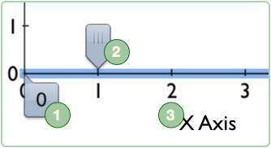

Adjusting the Axes

The x-axis and y-axis of your graph determine the range of values that are visible. You can adjust their scale to best display your data.
1 — To adjust the range of an axis, double-tap the tick handle at either end of the axis (probably 0 or 10), and type the number you want; the rest of the labels update accordingly. You can also drag the axis or ticks to adjust them. Drag with two fingers to pan the axis, adjusting the minimum and the maximum.
2 — Drag the tick interval handle to change the spacing of the ticks.
3 — In the event that “X Axis” and “Y Axis” aren’t exactly the titles you’re looking for, you can change the Axis title by double-tapping the axis label. If you delete the title and would like to see it again, touch and hold the axis and then tap the Show Axis Title button in the menu.
If you're using logarithmic scales, enter a maximum or a minimum using E notation. For example, if you wanted to have a maximum of 1050, just double-tap your endpoint to begin editing and type 1E50.
You can choose whether or axis is linear or logarithmic and change the visual style of an axis with the Axis Style popover.